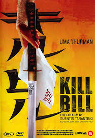
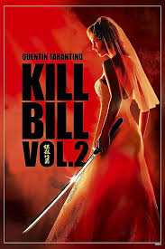
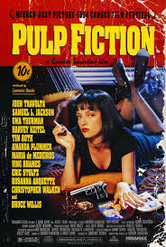
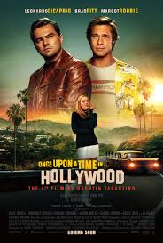

SPOTSTAR - QUENTIN TARANTINO
Quentin Tarantino is a celebrated filmmaker known for his bold style, sharp dialogue, and nonlinear storytelling. Born in Tennessee in 1963, he rose to fame with his debut film Reservoir Dogs, which quickly established his unique voice in cinema. His breakthrough came with Pulp Fiction, a film that redefined modern filmmaking and won major awards for its originality. Tarantino's films often blend violence, humor, and pop culture references, creating a distinctive cinematic world. He is known for his love of classic cinema, especially grindhouse, spaghetti westerns, and kung fu films, which influence his work heavily. Movies like Kill Bill, Inglourious Basterds, Django Unchained, and Once Upon a Time in Hollywood showcase his flair for memorable characters and gripping storytelling. Tarantino is also recognized for his use of music, often selecting tracks that perfectly match the mood of a scene. His scripts are packed with tension and rhythm, making them as compelling to read as they are to watch. He often collaborates with actors like Samuel L Jackson, Uma Thurman, and Christoph Waltz. With each film, Tarantino pushes creative boundaries while staying true to his vision. He has stated he plans to retire after his tenth film, adding anticipation to his every move.
POPULAR FILMS



